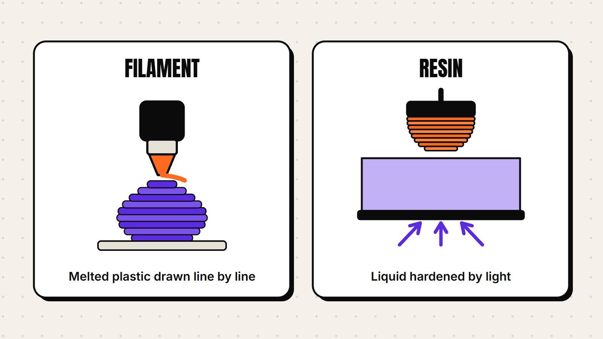
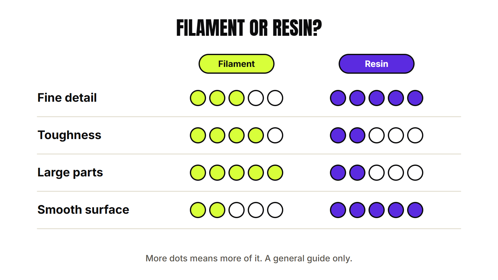

Two printing methods cover most of what people order: filament printing and resin printing. Both build an object layer by layer from a digital file, yet they behave very differently. One melts plastic and draws with it. The other hardens liquid with light. The right choice depends on the size of the piece, the detail you want, how it will be handled, and your budget. This guide compares them in everyday terms.
Filament printing, often called FDM or FFF, feeds a thin plastic strand from a spool into a heated nozzle. The nozzle lays down a line of soft plastic, moves along, and lays the next. When one layer is complete, the machine steps up and starts another. The plastic cools and bonds as it goes.
The result is a solid, practical part with visible layer lines on its sides. Common filaments include PLA, PETG, ABS, and ASA, each with its own strengths.
Resin printers hold a shallow tank of liquid photopolymer. A light source below or above the tank hardens one thin layer at a time, in exactly the shape required. The build plate lifts, fresh liquid flows underneath, and the next layer is cured. Common types include SLA, which draws with a laser, and MSLA, which shines light through a screen.
Because light can draw much finer shapes than a nozzle, resin parts show very small details and smooth surfaces.

A filament print needs its supports removed and perhaps a little cleaning. It is usually ready to handle at once.
A resin print has more steps. It comes out coated in liquid resin, which must be washed off, usually with a suitable alcohol or a washing solution. It is then cured under ultraviolet light until it is fully hard. Uncured resin can irritate skin and cause allergies, so whoever prints it needs gloves, ventilation, and careful waste handling. A finished part should reach you clean, dry, and fully cured.
Resin wins on detail. Faces on small figures, fine textures, tiny lettering, and jewellery patterns come out crisp. Filament can show detail well on larger pieces, but a nozzle has a fixed width, so very thin lines and small points may soften or disappear.
Layer lines appear in both methods. On resin they are usually hard to see without looking closely. On filament they are part of the visible texture, and finer layers or sanding can reduce them.
Standard resins tend to be brittle. A thin sword, a raised hand, or a small clip can snap if dropped. Tough and flexible resins exist, with different behaviour and cost. Good filament parts, especially in PETG or ASA, generally take knocks and repeated use better.
Sunlight and heat matter too. Many resins yellow or weaken with long exposure to ultraviolet light. For outdoor parts, ASA filament is the more common answer.
Large objects usually suit filament. It handles big shapes well, wastes little, and spools are simple to store. Resin printers often have smaller build areas, and the washing, curing, and disposal add work to each job. Resin is a sensible choice for small pieces where detail justifies it.

| Question | Filament | Resin |
|---|---|---|
| Fine detail | Good on larger parts | Excellent, even on small parts |
| Surface | Visible layer lines | Smooth, faint lines |
| Toughness | Usually better | Standard resins are brittle |
| Large pieces | Well suited | Often limited by build size |
| Outdoor use | ASA works well | Usually a poor choice |
| Finishing steps | Remove supports | Wash, cure, remove supports |
| Typical pieces | Organisers, mounts, decor, brackets | Miniatures, busts, small precise parts |
Some projects use both. A model might have a filament base for strength and a resin figure for detail, glued together after finishing.
Treat resin pieces gently. Lift them by the thickest part, keep them out of strong sun, and do not use them for food or drink. Filament pieces also have limits, particularly with heat. Our guide to caring for 3D prints explains what to avoid.
Tip: If you are unsure, send a picture of the piece and say how big it should be. Size alone often settles the choice between resin and filament.
These answers help avoid the most common disappointment with resin: a beautiful, detailed piece that was never meant to be handled like a toy. Say clearly how it will be used, and the design can be adjusted to match.
Short, occasional use is usually fine, but long exposure to sun and heat can yellow standard resins and make them brittle. For anything that lives outside, filament in ASA is the more dependable choice.
It depends on the gift. A small, detailed figure suits resin. A holder, stand, or name plate that will be handled every day usually suits filament.
Upload your model on the quote page and choose resin, a filament, or "Not sure". For a closer look at filament choices, read which filament suits your part, or learn how layer height changes the finish.